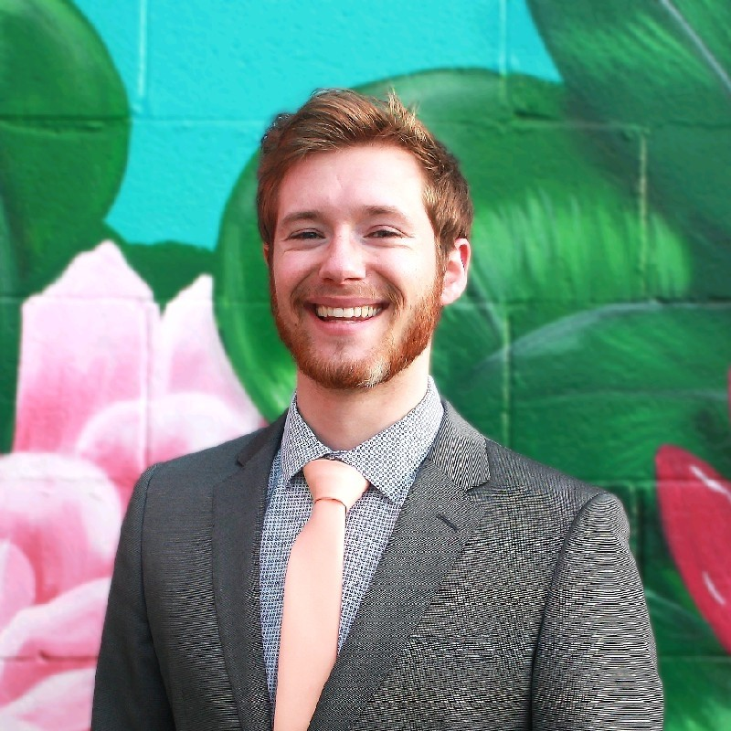

Justin Marmulak
Production Coordinator · Netflix Animation Studios
linkedin.com/in/justinmarmulak ↗Production Coordinator, Netflix Animation — Conference Co-Chair, Spark Animation.
Justin navigates the intersection of creative leadership and production operations at Netflix Animation. Rooted in an "artist-first" philosophy, he oversees complex workflows and serves as a leadership figure in the industry.
Co-Chair of the Spark Animation Conference — where team member Yuri first connected with him. A vocal advocate for the human touch in storytelling.
"People want to see themselves in the art."
Justin on AI & the Future of Animation
Justin reflects on how AI tools are already influencing production timelines at Netflix Animation — from pre-visualization to rendering — and shares his prediction that audiences will ultimately gravitate toward animation made with genuine human vision.
Read the Interview Transcript ↗Skip the 25-min video — the AI transcript summary on Otter.ai gives you the key insights in minutes.
"People are going to prefer the other. People want to see themselves in the art."— Justin Marmulak, Production Coordinator · Netflix Animation Studios
Perspective
Justin's outlook on AI in animation — from today through 2030+
Utilizing AI (Gemini / G Suite) for administrative automation like meeting summaries and email organization.
Predicting AI use in pre-visualization and temporary audio generation to speed up the iterative process.
AI as a sophisticated "AB testing" tool for cinematography and lighting, while creative leadership remains human-led.
High-end studios like Netflix prioritize auteurs and organic skills to create lasting, emotionally resonant properties.